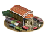
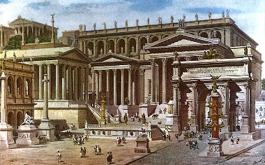

RTR: Imperium Surrectum
RTR: Imperium SurrectumTraders
5 levels, each replacing the one before it — you upgrade in place rather than building alongside.
Local Barter → Local Market → Forum → Large Forum → Great Forum
Pictures are the game's own building art. Where a culture ships none of its own, the game falls back to another culture's, and that is what is shown here.
Levels at a glance
| Level | Cost | Build time | Minimum settlement | Upgrades to | Level | Cost | Build time | Minimum settlement | Upgrades to | ||
|---|---|---|---|---|---|---|---|---|---|---|---|
| Local Barter | 750 | 2 | town | Local Market | Local Market | 2,500 | 4 | large town | Forum | ||
| Forum | 4,000 | 6 | city | Large Forum | Large Forum | 7,000 | 8 | large city | Great Forum | ||
 | Great Forum | 12,000 | 10 | huge city | — |
Costs in denarii, build time in turns.
Forum

Trade flourishes where it is encouraged. The Forum is a meeting place as much as a trading centre, and almost anything can be bought here, when the price is right.
In the hustle and bustle of this busy market anything and everything is for sale, even a man's secrets - or his sudden death!
Trade can, of course, be taxed. It can also be improved when this building is upgraded.
Wording varies by culture: 6 versions of this description exist in the game files.
| Cost | 4,000 denarii | Build time | 6 turns | Minimum settlement | city | Upgrades to | Large Forum |
What it does
- +1 public order (happiness)
- +4 taxable income
- +1 population growth
- up to 1 Assassin can be recruited in this settlement
- up to 2 Spies can be recruited in this settlement
Show 5 effects that apply only in the circumstances shown
- +4 trade income — only when
port - +12 trade income — only when
not port and not hidden_resource inland_trade_centre - +16 trade income — only when
not port and hidden_resource inland_trade_centre - allows recruiting Spies — only when
requires_gov - allows recruiting Assassins — only when
requires_gov
Great Forum

The Great Forum is the commercial hub of many provinces, a place where the great and the good meet. Anything imaginable is available to a man with gold in his purse. Trade flourishes when the merchant and ruling classes mingle.
The merchants control all trade within a region, bringing in riches and exotic goods in the process. They supply luxuries to guarantee the goodwill of the political class; that trade is taxed (to the hilt, if need be) as well is just another part of the cost of doing business.
Wording varies by culture: 4 versions of this description exist in the game files.
| Cost | 12,000 denarii | Build time | 10 turns | Minimum settlement | huge city |
What it does
- +3 public order (happiness)
- +5 taxable income
- +1 population growth
- up to 2 Spies can be recruited in this settlement
- up to 1 Assassin can be recruited in this settlement
Show 5 effects that apply only in the circumstances shown
- +6 trade income — only when
port - +18 trade income — only when
not port and not hidden_resource inland_trade_centre - +24 trade income — only when
not port and hidden_resource inland_trade_centre - allows recruiting Spies — only when
requires_gov - allows recruiting Assassins — only when
requires_gov
What the shorthands in those conditions stand for (1)
These are the mod's own, quoted from the game files unchanged.
| Shorthand | Stands for | ||||||
|---|---|---|---|---|---|---|---|
requires_gov | building_present governmentA or building_present governmentB or building_present governmentC or building_present governmentD or not is_player |
Local Barter

The Local Barter trades some local produce to other settlements increasing - in a small way - the wealth of the community.
The people of this outpost have started trading, despite the lack of a formal market stand. Grain, wine, and simple wares pass between hands under makeshift roofs. Without weights or coinage, bartering is guided by custom and the reputation of the traders. A retired centurion might offer cured pork in return for local cloth; a freedman trades in gossip as much as goods. In time, this small space will give rise to paved stalls, porticoes, and a bustling forum, but for now, it is the best place to barter.
It's still the best place to make a quick coin or a thousand! The Local Barter also allows you to take the local produce to other settlements, increasing - in a small way - the wealth of the community. Bartering carries risks, but it is an excellent way of increasing wealth, because settlements and nations flourish when they are mutually supporting, not attempting to be entirely self sufficient.
Trade can, of course, be taxed. It can also be improved when this building is upgraded.
Wording varies by culture: 9 versions of this description exist in the game files.
| Cost | 750 denarii | Build time | 2 turns | Minimum settlement | town | Upgrades to | Local Market |
What it does
- +3 taxable income
Show 3 effects that apply only in the circumstances shown
- +2 trade income — only when
port - +6 trade income — only when
not port and not hidden_resource inland_trade_centre - +8 trade income — only when
not port and hidden_resource inland_trade_centre
Local Market

An organised Market allows locals to trade and brings in outside traders too. Many goods are available, including information - at the right price.
As a settlement grows the returns on trade improve too, as long as merchants are encouraged to do business. An organised Market allows locals to trade and brings in outside traders too. It's a place for people to meet, buy and sell, and catch up on gossip. Many goods are available, including information - at the right price.
Trade can, of course, be taxed. It can also be improved when this building is upgraded.
The Market is also a place to hire those who specialise in the information business.
Wording varies by culture: 3 versions of this description exist in the game files.
| Cost | 2,500 denarii | Build time | 4 turns | Minimum settlement | large town | Upgrades to | Forum |
What it does
- +1 public order (happiness)
- +3 taxable income
- up to 1 Assassin can be recruited in this settlement
- up to 1 Spy can be recruited in this settlement
Show 4 effects that apply only in the circumstances shown
- +3 trade income — only when
port - +9 trade income — only when
not port and not hidden_resource inland_trade_centre - +12 trade income — only when
not port and hidden_resource inland_trade_centre - allows recruiting Spies — only when
requires_gov
Large Forum

If it can't be bought or sold somewhere among the traders in the Great Forum, then 'it' probably isn't worth bothering about, whatever it might be. This is the great centre of all business in a city, a place where goods from across the known world can be found. Anything - even a man's loyalty, his secrets or his demise - can be bought when the price is right.
Such extensive trading activity can, of course, be taxed. It can also be improved when this building is upgraded.
Wording varies by culture: 5 versions of this description exist in the game files.
| Cost | 7,000 denarii | Build time | 8 turns | Minimum settlement | large city | Upgrades to | Great Forum |
What it does
- +2 public order (happiness)
- +5 taxable income
- +1 population growth
- up to 1 Assassin can be recruited in this settlement
- up to 2 Spies can be recruited in this settlement
Show 5 effects that apply only in the circumstances shown
- +5 trade income — only when
port - +15 trade income — only when
not port and not hidden_resource inland_trade_centre - +20 trade income — only when
not port and hidden_resource inland_trade_centre - allows recruiting Spies — only when
requires_gov - allows recruiting Assassins — only when
requires_gov